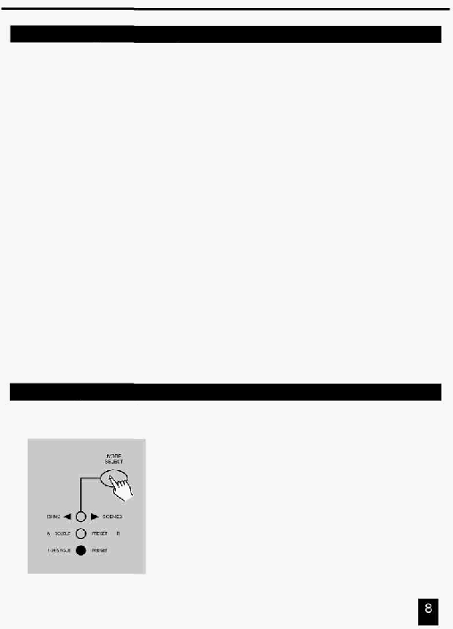

2. Опис інструкцій
2.1.2 Безпека Ваших Програм
3.
Утримуючи кнопки
Record й Edit, натисніть кнопки Flash для уведення
нового Коду Запису (Record Code).
Код Запису містить послідовно чотири цифри відповідні чотирьом послідовно
натиснутим кнопкам Flash (однаковим або різним), які й складуть нове
значення Коду Запису.
4. Уведіть нове значення Коду Запису повторно, при цьому всі індикатори каналів
і сцен мигнуть три рази, тепер Код Запису змінений.
5.
Вихід з режиму Запису (Record). Натисніть кнопку Rec Exit при цьому
натиснувши й утримуючи кнопку Record (Запису).
УВАГА!!!
Завжди пам’ятайте про необхідність виходу з режиму Запису
(Record), якщо Ви не хочете продовжувати програмування, інакше
Ви можете втратити контроль над пультом.
ПРИМІТКА:
Якщо при повторному
уведенні Коду Запису він відмінний від першого, то
індикатори мигати не будуть, тому що присутня помилка уведення при зміні
Коду Запису (Record Code).
Якщо при першому
уведенні Коду Запису для його зміни Ви вирішили не
робити цього, то натисніть одночасно кнопки Record й Exit для виходу.
2.1.3 Програмування Сцен
1.
Виконайте процедуру Дозвіл Запису.
2. Виберіть Одиничний (Single) 1-48 режим натисканням кнопки
вибору режиму (Mode Select). Це дасть можливість керування
всіма 48 каналами, які Ви програмуєте.
Переконайтеся, що обидва повзунки Master A й B установлені в
максимальне значення.
(Повзунок
Master A
перебуває в крайнім
верхнім
положенні
–
максимум повзунка Master A, у той час як повзунок
Master B у
крайнім нижнім положенні – максимум повзунка Master В.)